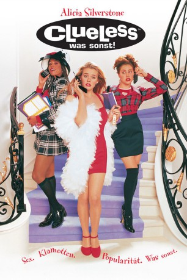

#5981 Clueless - Was sonst!
Alternativ: Clueless
 
 IMDB-Wertung: 6.8 / 10
IMDB-Wertung: 6.8 / 10  Metascore: 0
Metascore: 0 
Es ist nicht leicht das beliebteste und bestangezogendste Mädchen der Beverly Hills High School zu sein. Vor allem, wenn man dazu noch den Neid zahlreicher Möchtegern- Schönheiten auf sich zieht. Für Cher ist das alles kein Problem. Sie findet sogar noch etwas Zeit für ihre Hobbies: Zum Beispiel für ihre Lehrerin einen Liebhaber zu finden, oder ein schüchternes Mauerblümchen in ein Objekt männlicher Begierde zu verwandeln. Erst als Justin, ein verdammt gutaussehender Junge, und ihr Ex-Stiefbruder Josh unerwartet auf der Bildfläche erscheinen, gerät auch Chers Gefühlsleben beträchtlich durcheinander
Jahr: 1995
Dauer: 97 Minuten
FSK: 6
Land: USA Studio: Paramount PicturesTonspuren: DD2.0 - ,
Untertitel: Englisch,
Auflösung: 720p (1280x720) Größe: 4618 MB
Genre: Komödie, Liebe
Regisseur: Amy Heckerling
Drehbuch: Bill Forsyth
Soundtrack:
Darsteller:
- Alicia Silverstone als Cher
- Stacey Dash als Dionne
 Brittany Murphy als Tai
Brittany Murphy als Tai Paul Rudd als Josh
Paul Rudd als Josh Donald Faison als Murray
Donald Faison als Murray- Elisa Donovan als Amber
 Breckin Meyer als Travis
Breckin Meyer als Travis Jeremy Sisto als Elton
Jeremy Sisto als Elton Dan Hedaya als Mel Horowitz
Dan Hedaya als Mel Horowitz Wallace Shawn als Mr. Wendell Hall
Wallace Shawn als Mr. Wendell Hall- Twink Caplan als Miss Toby Geist
- Justin Walker als Christian
 Julie Brown als Ms. Stoeger
Julie Brown als Ms. Stoeger- Nicole Bilderback als Summer
- Ron Orbach als DMV Tester
- Sean Holland als Lawrence
- Jace Alexander als Robber
- Josh Lozoff als Logan
- Carl Gottlieb als Priest
 Joseph D. Reitman als Student
Joseph D. Reitman als Student- Micki Duran als Dancer
- Jermaine Montell als Dancer
- Monica Eva Foster als Cheerleader , uncredited
- Amy Heckerling als Maid of Honor , uncredited
- Michael Klesic als Baggy Skater , uncredited
- Sam Maccarone als Baggy skater , uncredited
 Billy West als Stimpson J. Cat , archive footage, uncredited
Billy West als Stimpson J. Cat , archive footage, uncredited- Aida Linares als Lucy
- Sabastian Rashidi als Paroudasm
- Herb Hall als Principal
- Susan Mohun als Heather
- Roger Kabler als College Guy
- Anthony Beninati als Bartender
- Gregg Russell als Dancer
- Danielle Eckert als Dancer
- Dicky Barrett als Himself , uncredited
- Christopher E. Cooper als Student , uncredited
- John Kricfalusi als Ren Höek , archive footage, uncredited
- Craig Ponder als Baggy Skater , uncredited
- Bobbie Sunday Starr als Passenger in Jeep , uncredited
Datei: X:\1995\Clueless - Was sonst! (1995, FSK6, 1280x720).mkv seit 18.04.2017
Festplatte: HD 1992-1995
 Es gibt insgesamt 85 Filme in der Gruppe '1995'
Es gibt insgesamt 85 Filme in der Gruppe '1995'